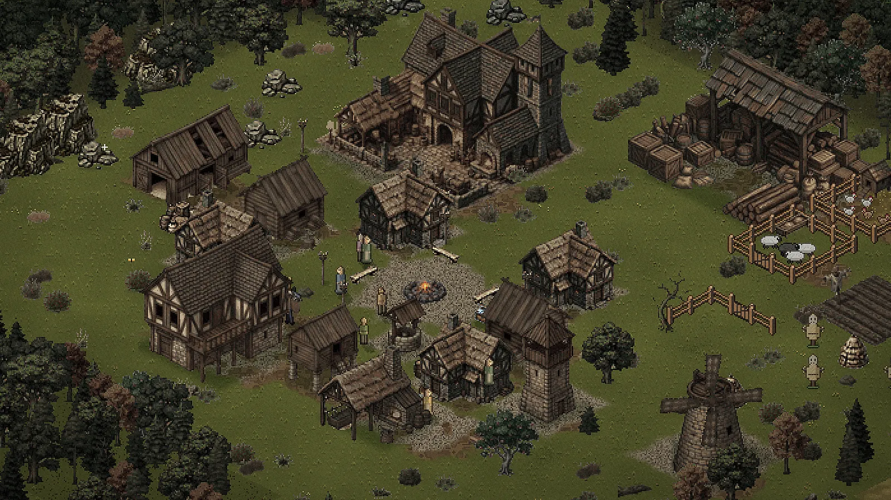
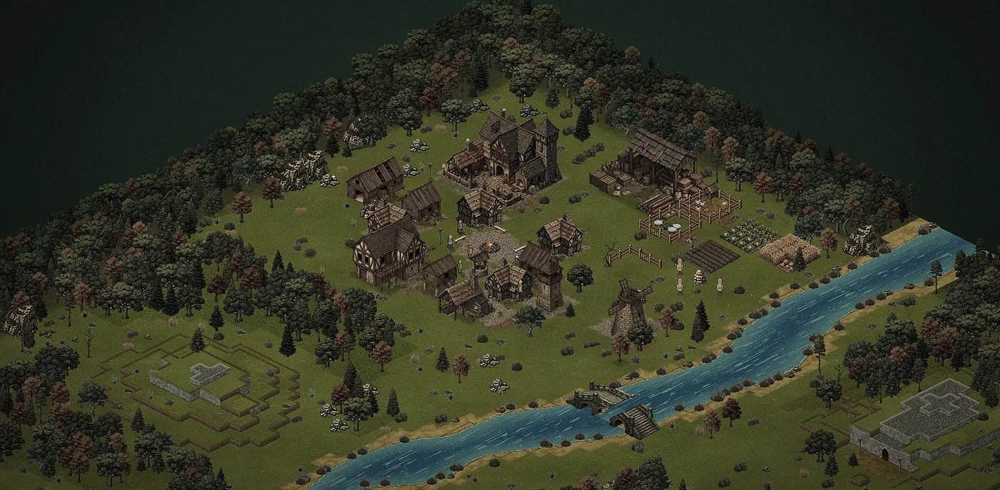
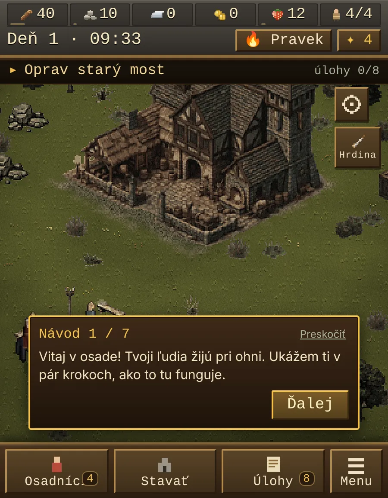
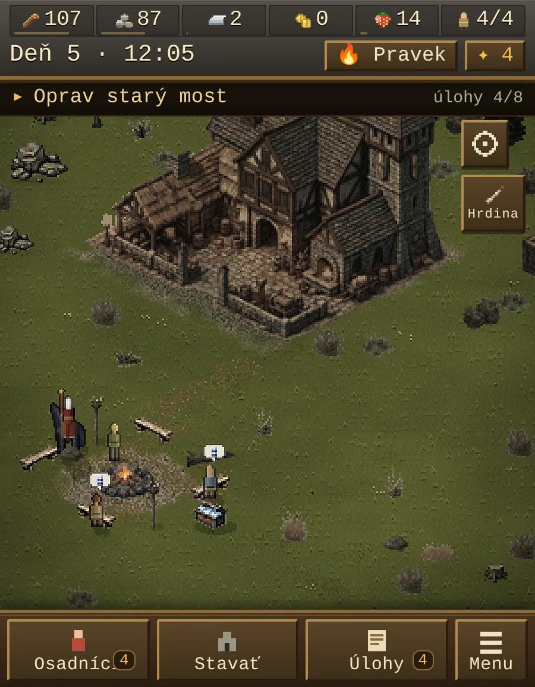
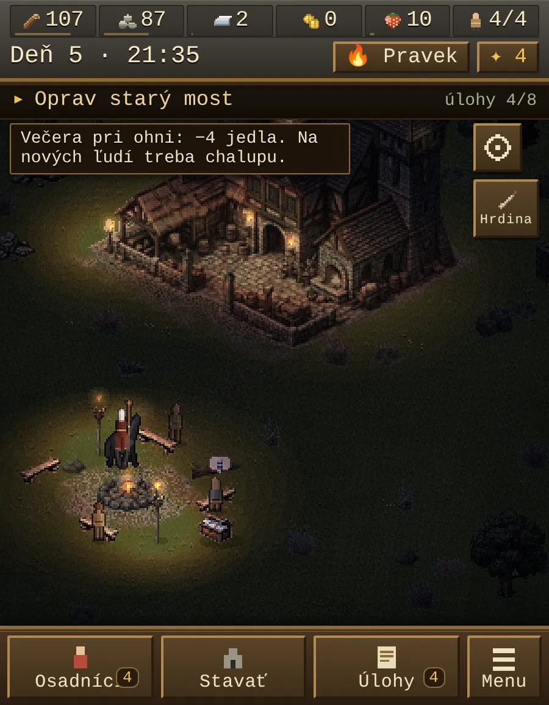
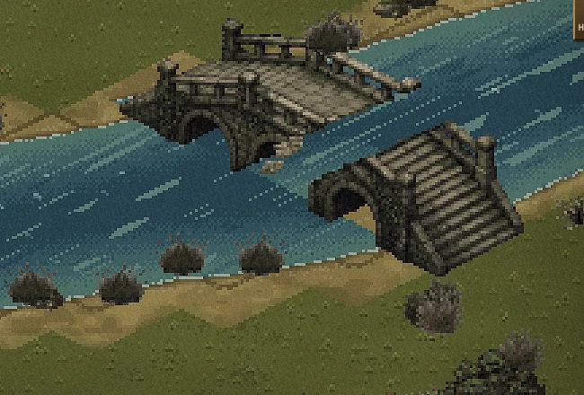
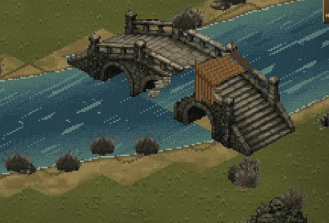
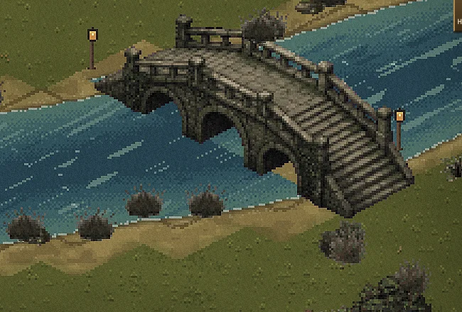
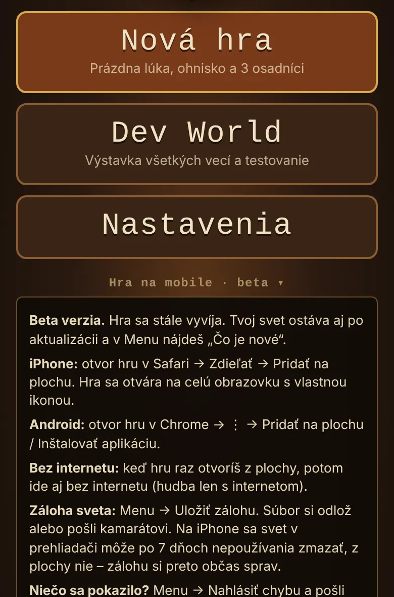
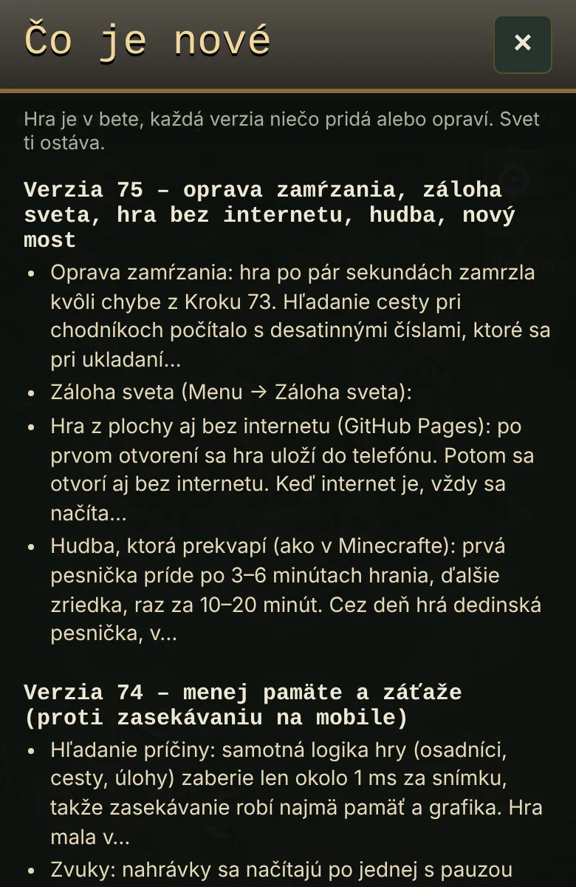

Blog ·
Usage of Empires je hrateľná. Vyskúšaj ju a povedz mi, čo je zle.
Hra, ktorú si stavám s AI, sa dá odteraz hrať. Stačí odkaz, nič sa neinštaluje. Je to beta, takže čakaj chyby. Práve preto ju dávam von: potrebujem, aby ju vyskúšal niekto iný ako ja, a povedal mi, čo sa pokazilo.

Pred pár dňami som písal o hre, ktorú si staviam s AI. Odvtedy sa stala jedna dôležitá vec: dá sa hrať. Otvoríš odkaz v telefóne alebo v počítači a hráš. Nič sa neinštaluje.
Je to beta. Niečo ťa poteší a niečo sa pokazí. Svoju hru poznám naspamäť, ale vidím len to, čo vidím ja. Potrebujem oči niekoho, kto ju nikdy nevidel.

Ako ju vyskúšaš
- Otvor odkaz v telefóne (Safari alebo Chrome) alebo v počítači.
- Ťukni na Nová hra. Dostaneš prázdnu lúku, ohnisko a troch osadníkov. Krátky návod ti ukáže prvé kroky.
- Na telefóne si hru pridaj na plochu. iPhone: Safari → Zdieľať → Pridať na plochu. Android: Chrome → ⋮ → Pridať na plochu alebo Inštalovať aplikáciu.
Z plochy sa hra otvorí na celú obrazovku, s vlastnou ikonou, a ide aj bez internetu. Len hudba potrebuje internet. Hrá sa na výšku aj na šírku a tlačidlom Hrdina/Mesto prepínaš medzi stavaním dediny a ovládaním hrdinu.



Čo ťa čaká
- Osadníci pracujú sami. Každý má profesiu: drevorubač, kameník, zberač alebo baník. Voľní pomáhajú tam, kde čoho ubúda. Na rozdeľovanie ľudí je menu Osadníci, ako v Age of Empires.
- Prvý cieľ je oprava starého mosta. Stojí drevo a kameň, takže to chvíľu potrvá. Jeden herný deň trvá 6 minút a ceny sú úmyselne vyššie, lebo sa v hre nedá zomrieť. Hra nemá koniec ani víťazstvo, tak sa nikam netreba náhliť.
- Za mostom sa otvorí jaskyňa s dungeonom, baňa a prístav. Keď postavíš prístav, každý tretí deň pripláva obchodná loď.
- Príšery z jaskyne vedia v noci vyliezť a ukradnúť trochu surovín. Dedinu nezničia. Strážne veže a hrdina ich zastavia.
- Budovy majú vylepšenia, ktoré kúpiš raz a platia navždy. Napríklad fúrik, lepšia sekera alebo píla.



Most je najnovší kúsok grafiky. Hotovú verziu nakreslilo Gemini. Rozpadnutý most a lešenie dorobil Claude z toho istého obrázka, aby všetky tri štádiá vyzerali ako jeden most.
Čo sa od prvého článku zmenilo
- Hra je online na GitHube a ide z plochy telefónu aj bez internetu.
- Ovládanie je ako v Age of Empires: kamenná lišta hore, drevený pás s tlačidlami dole, jedno okno naraz.
- Pribudli nahrávky lesa, rieky a kostolného zvona.
- Hudba, ktorá prekvapí. Mám štyri skladby: dennú, dve nočné a víťaznú po poražení bossa. Hrajú zriedka, ako v Minecrafte. Prvá príde po 3 až 6 minútach hrania, ďalšie raz za 10 až 20 minút. V Menu sa dá hudba vypnúť.
- Záloha sveta. Menu → Záloha sveta uloží súbor so tvojou dedinou. Odložíš si ho alebo pošleš kamarátovi a vieš ho nahrať späť.
- Po každej aktualizácii sa ti raz otvorí okno Čo je nové. Nový hráč ho nevidí.


Chyba, ktorú som si spôsobil sám
Hra mi po pár sekundách zamŕzala. Tipoval som, že je v nej príliš veľa zvukov naraz. Mýlil som sa.
Pri úprave chodníkov AI urobila chybu. Osadníci pri hľadaní cesty počítali s desatinnými číslami, ktoré sa pri ukladaní nepatrne zaokrúhľovali. Tak skúšali tú istú cestu stále dookola. Claude to nenašiel hádaním. Zastavil program v momente, keď visel, a pozrel sa, čo robí. Potom chybu opravil a nechal hru odsimulovať 16 herných dní v kuse bez zásahu.
Zvuky som aj tak zmenšil zo 70 MB na 14 MB, aby bola hra plynulejšia na telefóne. Jedna lekcia z toho: keď niečo visí, najprv meraj a až potom hádaj.
Čo ešte nefunguje
- Svet sa ukladá len v tvojom prehliadači. Hra nemá server ani online hru. Na iPhone môže Safari po 7 dňoch nepoužívania zmazať údaje stránky v prehliadači. Z plochy sa to nestáva. Preto si občas urob zálohu sveta.
- Prístav, loďka a obchodná loď majú zatiaľ staršiu grafiku, ktorá nesedí k novému mostu.
- Hra je len po slovensky.
- Názvy Ducha osady a príšer sú pracovné.
S čím mi môžeš pomôcť
Zahraj si aspoň 15 minút a povedz mi:
- Zasekáva sa ti hra? Na akom telefóne?
- Pochopil si bez môjho vysvetľovania, čo máš robiť v prvých 10 minútach?
- Kde si sa začal nudiť alebo si prestal hrať?
- Čo ti v hre chýba?
Ak sa niečo pokazí, ťukni v hre na Menu → Nahlásiť chybu. Hra pripraví text s verziou, dňom v hre, typom telefónu, plynulosťou a poslednými chybami. Otvorí sa ti zdieľanie, tak ho pošli kamkoľvek. Mne ho môžeš poslať cez tlačidlo Napíš mi hore na stránke.
Čo bude ďalej
Prístav, loďka a obchodná loď by mali dostať grafiku v štýle nového mosta. Viac dungeonov a lokalít. A neskôr ukladanie na server, aby svet nebol uložený len v prehliadači. Najprv ale musím vedieť, čo je pokazené u vás.
Chceš si niečo také vyskúšať sám? Na 3-hodinovej session ťa to naučím na tvojich vlastných veciach.
15 min hovor zadarmo